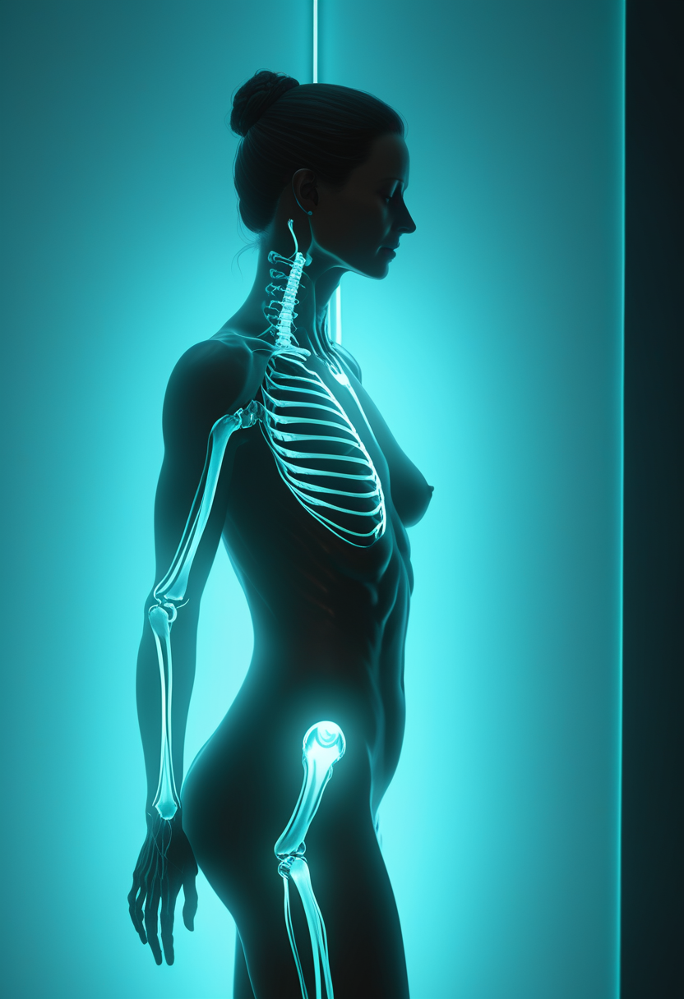
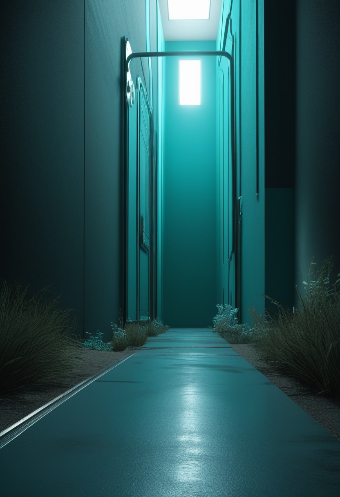
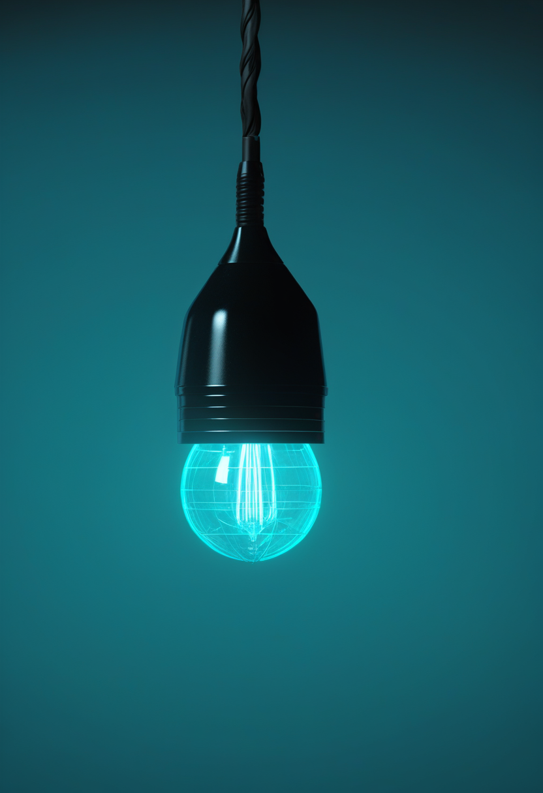
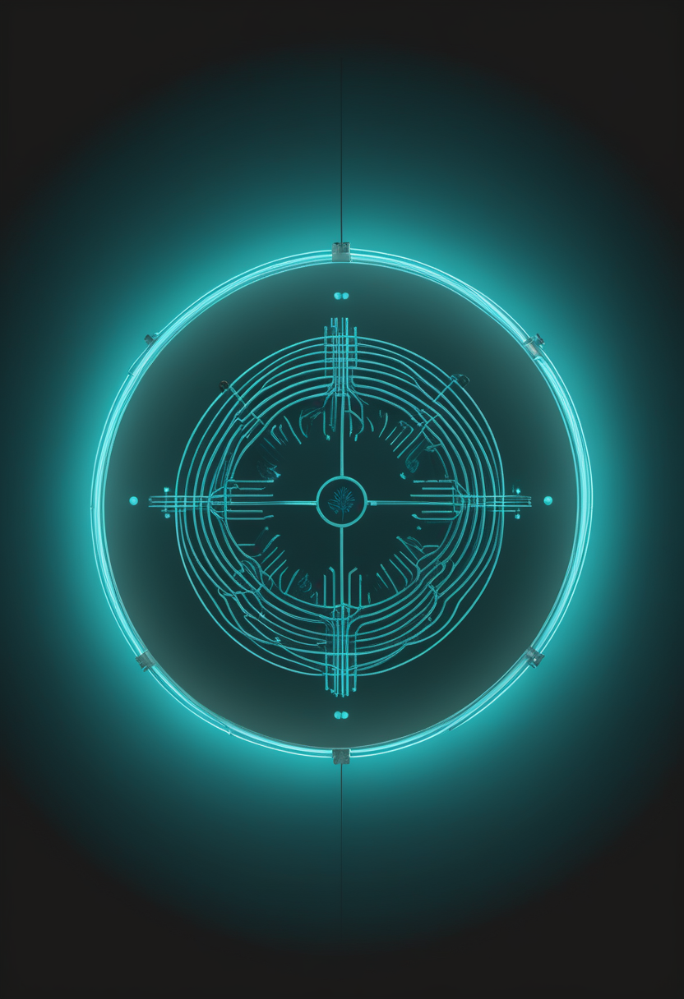
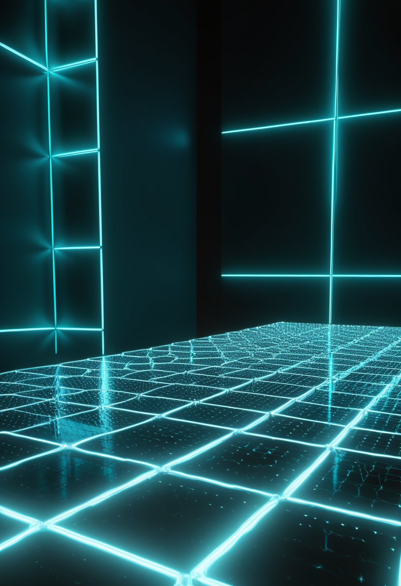
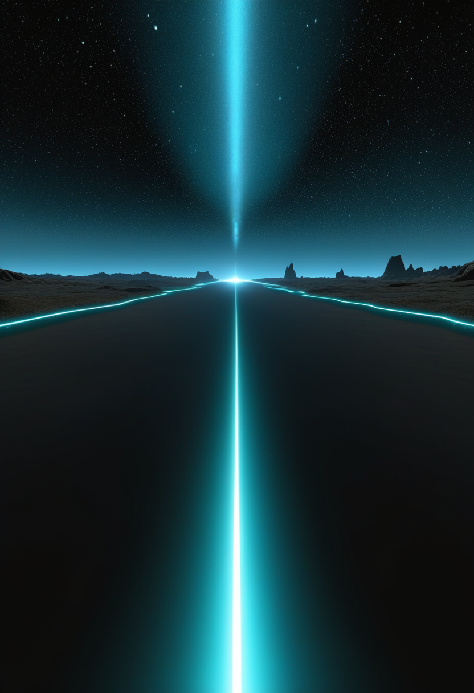

木曜日の便り。ナイジェリアで確認されたエボラのウイルス株が、DRCの流行と同じブンディブギョ型であることが確認され、この型の検出が確認された国は5か国目になった。米CDCの最新集計は確定9,582例・死亡4,605人で、ケニアは9例のまま増加していない。基盤の章ではこれに加え、ロシア・イルクーツクの研究所職員の原因不明肺炎(ペストは否定)と、米国の麻疹が4,410例に達したことを届ける。命の章では欧州で承認された髄腔内投与のゾルゲンスマ『Itvisma』と、インド・ケララ州での低価格薬をめぐる論争、イングランドの新生児スクリーニング評価事業の始動を。自由の章では中国の侵襲型BCI商用承認と、Paradromicsの4年耐久記録、発話インプラントの実用化見通しを。畏敬の章ではGoogleのWillowによる量子誤り訂正の前進と、Euclidが初めて発見した新彗星を。美の章では国連のニューロテクノロジー報告書と、AIの意識を人がどう判断するかという実証研究、ショウジョウバエの脳をAIの世界モデルで動かす話題を取り上げる。
10/21号(No.114)の続報 ― ナイジェリアで確認された国内初のエボラ確定例について、WHOはウイルス株がコンゴ民主共和国(DRC)の流行と同じブンディブギョ型であることを確認した。この型の検出が確認された国としては、5月中旬にDRCで流行が宣言されて以来、ナイジェリアが5か国目にあたる(先行する国の内訳は出典に明記がなく要確認)。米CDCは10月20日時点でブンディブギョ型エボラの累計を9,582確定例・4,605死亡とし、うち9,552例がDRC、残りはケニア9例・ナイジェリア1例などに分かれるとした。ECDCの10月15〜18日時点の集計(9,277〜9,552確定例・4,478〜4,602死亡)と比べても、増加のペースは鈍っていない。ケニアは9例のまま増えておらず、接触者135人中134人の追跡・隔離が続く。ナイジェリアは接触者44人を21日間観察しており、感染源は調査中。ブンディブギョ型には承認されたワクチンも特異的な治療薬もなく、WHOは渡航・貿易の制限には反対の立場を保っている。

Novartisの髄腔内投与型オナセムノゲン アベパルボベク『Itvisma』が欧州委員会の承認を得て、2歳以上の小児・思春期・成人の5q SMAに使える初の遺伝子治療となった。従来のゾルゲンスマは静脈投与で体重制限から乳児向けが中心だったが、投与経路を脊髄腔内に変えることで年長の患者にも道が開けた。根拠となったSTEER試験では、HFMSEが52週にわたり統計的に有意な+2.39点の改善を示した。
Biogenが年1回投与を目指して開発するサラネルセンは、スピンラザの後継候補。ゾルゲンスマ投与後に反応が乏しかった小児を対象とした第1b相の中間成績では、1年以上の追跡で24人のうち12人が新たなWHO運動マイルストーンを1つ以上獲得し、神経損傷マーカーの神経フィラメント軽鎖は6か月で約75%低下してその後も維持された。ゾルゲンスマ既治療の乳児を対象とする新試験(NCT07444450)は開始予定日が2026年10月31日で、登録情報は10月15日に更新された。第3相STELLARは発症前の新生児を対象に、サラネルセン単独・ゾルゲンスマ単独・ゾルゲンスマ後にサラネルセンの3通りを比べる。

インド保健当局は、SMA治療薬としてロシュのエブリスディ(リスジプラム)ではなくNatco製の後発品を選んだとThe Weekが報じた。価格は後発品が月額約3万ルピーとされる一方、先発品は1瓶あたり約62万ルピーと報じられている(要確認:Natcoは2025年に60mgボトルを15,900ルピーで発売済み)。デリー高裁は2025年10月、後発品の製造・販売を認める判断を下している。
インド・ケララ州では低価格の国産SMA薬を子どもに投与しており、州閣僚は専門家委員会の勧告に基づく措置と説明した。野党は、治験段階にある薬が保護者の十分な同意なく投与されているのではないかと懸念を示している。価格を下げることと、安全性・同意手続きをどう両立させるかが問われている。
10月から、すでに検査体制のある7つの検査施設で、かかとからの採血(既存の新生児検査)にSMAを加える評価事業が始まった。対象は当面イングランドの新生児の約72%で、残る6施設は2027年10月から対象に加わる。政府は評価事業に410万ポンドを充てる。スコットランドは3月に試行を始めたが、ウェールズと北アイルランドには実施計画がない。
新薬は『SMN2標的』『遺伝子治療』『筋肉標的』の3層が併用前提で揃う一方、今日はそれに加えて価格(インド・ケララ)と発症前診断の実装(イングランド)という普及の局面が同時に進んだ。

Paradromicsは10月8日、埋め込み型BCIが羊の前臨床モデルで4年を超えて神経記録とデコード性能を安定して維持したと発表した。信号品質の劣化はわずかで、電極の組織内移動も見られないという。2025年11月時点の発表では『3年』だったため、同じ動物試験の継続とみられる(企業発表、第三者による検証は未確認)。埋込型BCIは電極周囲の瘢痕化で信号が落ちていくのが長年の課題で、年単位の安定性を示せるかが実用化の分かれ目になる。同社の最初のヒト埋め込みは2026年6月、ミシガン大学でのConnect-One早期実行可能性試験だった。

中国Neuracle社の無線BCI『NEO』は2026年3月13日にNMPAの製造販売承認を取得しており、侵襲型BCIの商用承認としては世界初とされる。脊髄損傷による重度麻痺(18〜60歳)の運動信号を読み取り、補助機器を操作する用途向け。2026年6月時点の俯瞰研究では、中国臨床試験登録(ChiCTR)に載るBCI関連試験は134件、うち研究者主導試験26件、NMPA承認済み製品は5件にのぼる。米国企業の動きだけを見ていると、規制通過の速度を見誤る。
Science Newsは、声を失った人の発話を脳信号から再構成するインプラント研究の現状をまとめた。UC Davisの脳神経外科医ブランドマン氏は、ALS患者に出会って『話す助けになるインプラントがある』と提案できるまで、おおよそ5年という見通しを示している。研究段階の成果が日常医療に移るまでには、まだ距離がある。
今週のBCIは新しい埋め込みそのものより、商用承認の速度(中国)・耐久性(Paradromics)・臨床応用までの時間軸の見積もり(UC Davis)という裏方の整備が中心だった。視線入力の新規ニュースは今回も取得できなかった。
WHOは、ナイジェリアで確認された国内初のエボラ確定例のウイルス株が、DRCの流行と同じブンディブギョ型であることを確認した。5月中旬のDRCでの流行宣言以来、この型の検出が確認された国としてはナイジェリアが5か国目にあたる。米CDCは10月20日時点で累計を9,582確定例・4,605死亡とし、うち9,552例がDRC、残りはケニア9例・ナイジェリア1例などに分かれるとした。ナイジェリアは接触者44人を21日間観察しており、感染源は調査中。ケニアは9例のまま増えておらず、接触者135人中134人の追跡・隔離が続く。
ロシア・イルクーツクにある抗ペスト研究所の検査担当職員が重症の肺炎を発症し、10月2日に死亡した。報道では肺ペストの可能性も取り上げられたが、ロシア当局は否定し、接触者からも高リスク病原体は検出されていないとしている。WHOは追加情報を求めつつ継続的な人-人伝播の証拠はないとし、ECDCはEU域内へのリスクを判断する情報が不十分だとしている。10月12日以降の新しい更新は確認できていない。
米国の今年の麻疹症例は10月15日時点で累計4,410例となり、前週比で約330例(約8%)増えた。州別ではペンシルベニア州が10月14日時点で1,222例・入院225件と最多で、CDCのEpi-Aidチームが派遣されている。同州の死亡数は出典により5人・6人と食い違い要確認。エボラの陰で、ワクチンで防げる感染症の国内流行が続いている点は見落としやすい。
ブンディブギョ型にはワクチンも特異的治療薬もなく、接触者追跡と隔離の速さが封じ込めの全てになる。エボラの陰で、麻疹のようにワクチンで防げる感染症の国内流行が続いている点も見落とせない。

Google Quantum AIは10月15日のScience論文で、量子計算のボトルネックだったマジックステート生成について、チップの小領域でノイズの多い状態から育てて誤りが疑われる試行を捨てる『栽培(cultivation)』を実機Willowで実証した。未栽培の状態と比べ誤りは約40分の1、論理忠実度は99.99%以上に達したが、採択率は約8%で選別はかなり厳しい。手法は2024年にGidney・Shutty・Jonesが提案したもので、暗号解読につながる話ではない。

ESAは10月19日、宇宙望遠鏡Euclidが未知の彗星を初めて発見したと発表した。元画像は9月16〜24日に撮られたもので、ヘルシンキ大学の博士課程学生ペンティネン氏が書いた『露出間で位置がずれる天体を拾う』ソフトウェアが5組の画像から検出し、地上観測で確認、小惑星センターがC/2026 S1 (Euclid)と命名した。銀河面の上側を越える珍しい軌道のため、Euclidの探査領域を横切った。この彗星自体はESAの将来計画Comet Interceptorの対象には適さないとされるが、太陽から遠いうちに彗星を見つけられる実証にはなった。
10月7日、トリウム229を使う光核時計の論文が2本Natureに掲載された。いずれもフッ化カルシウム結晶にトリウム229を埋め込み、148nmの核遷移に連続波レーザーをロックする方式で、フィードバックループ型は分数周波数不安定性3×10⁻¹²/√τを示した。現状の安定度は最良の原子時計には及ばないが、著者らは4桁程度の改善が見込めるとしている。原子の電子ではなく原子核を使うため外乱に強く、物理定数の変動検証などに向く。
NASAはChandra X線望遠鏡、Webb、Hubbleなどの観測を重ねた16銀河の合成画像集を公開した。ブラックホールのジェット、爆発的な星形成、銀河の衝突など、波長ごとに異なる姿を一度に見ることができる。
量子は『誰が一番か』より『どの段階のボトルネックを崩したか』で読む週になった。中国の一次科学ソース(CAS・CNSA)は10月20〜22日に確認できる新規発表がなかった。
10月15日に提示された国連の報告書は、ニューロテクノロジーの進展が人権を守る法整備を追い越していると警告した。挙がったリスクはプライバシー、思想の自由、そして公正な裁判を受ける権利で、とりわけ社会的に弱い立場の人に影響が大きいとする。脳データが本人に不利に使われうるという論点が、国際機関の文書として正面から扱われた形だ。
LMUミュンヘンのロンギン氏らはCognition誌で、AIとヒトがまったく同じように振る舞っても、参加者は最も反応のよいAIを最も反応の鈍いヒトより『意識が低い』と評価したと報告した。一方で『気づき(awareness)』という言葉で尋ねると、AIとヒトの評価は近かった。人は機能ではなく『本質』で意識を判断している可能性がある。
神経科学者アニル・セス氏の『生物学的自然主義』(意識に関わる機能は生物学的な過程と切り離せないという立場)を検討する論集が、Behavioral and Brain Sciences誌に50本の論評とともに公開された。セス氏の応答論文『The stuff matters』は、シリコンのデジタル計算機に意識が宿ることに強い懐疑を示す。マインドアップロードの前提そのものを問う議論として重要。
AIラボのOdysseyは10月17日、ショウジョウバエの脳モデルを自社の世界モデルOdyssey-3の中で動かし、港や市場の映像の中を自律的に移動する動画をXに公開した。ただし論文や技術詳細は未公開で、使ったコネクトーム(神経接続地図)も明らかにしていない。ニューロン数は報道により約13.9万(FlyWireの139,255に一致)と約16.6万で食い違う(要確認)。
『脳を写して動かす』デモは話題を集めるが査読の裏付けは乏しく、一方で規制(国連報告書)と実証研究(AIの意識の帰属・生物学的自然主義)は確実に歩を進めている。
木曜日の便り。ナイジェリアで確認されたエボラのウイルス株が、DRCの流行と同じブンディブギョ型であることが確認され、この型の検出が確認された国は5か国目になった。米CDCの最新集計は確定9,582例・死亡4,605人で、ケニアは9例のまま増加していない。基盤の章ではこれに加え、ロシア・イルクーツクの研究所職員の原因不明肺炎(ペストは否定)と、米国の麻疹が4,410例に達したことを届けた。命の章では欧州で承認された髄腔内投与のゾルゲンスマ『Itvisma』と、インド・ケララ州での低価格薬をめぐる論争、イングランドの新生児スクリーニング評価事業の始動を伝えた。自由の章では中国の侵襲型BCI商用承認と、Paradromicsの4年耐久記録、発話インプラントの実用化見通しを。畏敬の章ではGoogleのWillowによる量子誤り訂正の前進と、Euclidが初めて発見した新彗星を。美の章では国連のニューロテクノロジー報告書と、AIの意識を人がどう判断するかという実証研究、ショウジョウバエの脳をAIの世界モデルで動かす話題を取り上げた。
では、また明日の朝に。 — JaH